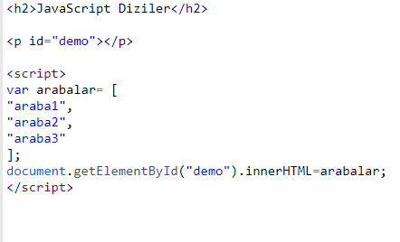
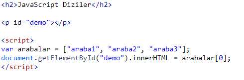
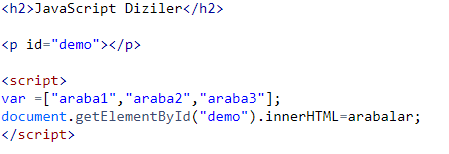
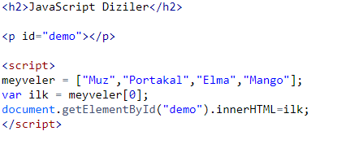
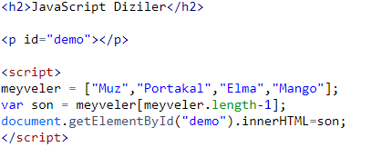
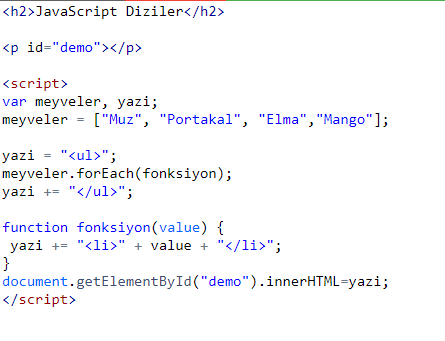
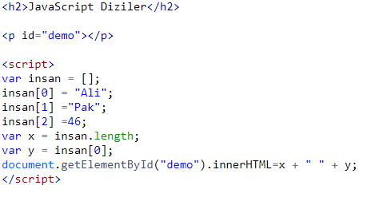
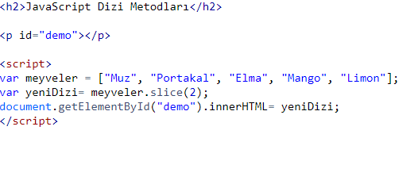

DİZİLER VE DİZİ İŞLEMLERİ
JavaScript dizileri birden fazla değeri tek bir değişkende depolamak için kullanılır.
Dizi nedir?
Dizi özel bir çeşit değişkendir, tek seferde birden fazla değeri barındırabilir. Eğer bir listeniz varsa (örneğin araba isimleri listesi), her bir araba ismini değişkenlerde şöyle saklayabilirdiniz:var araba1 = "araba1";
var araba2 = "araba2";
var araba3 = "araba3";
Ancak, araba isimleri içinden tek bir tanesini bulmanız gerektiğinde ne yapacaktınız? Ve 3 tane değil de 300 araba ismi olsaydı?
Çözümü bir dizi kullanmak!
Bir dizi tek bir isim altında birden fazla değeri saklayabilir, ve siz de index numarası yardımıyla istediğiniz değere ulaşabilirsiniz.
Dizi Oluşturmak
Bir JavaScript Dizisi oluşturmanın en kolay yolu köşeli parantezleri kullanmaktır.Yazımı şu şekildedir:
var dizi_ismi = [oge1, oge2, ...];
Boşluklar ve satır araları önemli değildir. Dizi oluşturma birkaç satırda birden de yapılabilir:
Örnek

Ekran çıktısı
JavaScript Diziler
araba1,araba2,araba3Son elemandan sonra virgül koymak (örnek: "araba2",) bazı tarayıcılarda çalışmayabilir. Internet Explorer 8 ve öncesinde çalışmazlar.
JavaScript "new" Anahtar Kelimesini Kullanmak
Bu örnek bir dizi oluşturur ve içine değerler atar:Dizinin Elemanlarına Erişme
Dizi elemanlarına erişmek için dizideki index numaralarını kullanırız. Bu örnek satır arabalar dizisinin ilk elemanına erişir:Örnek
var isim = arabalar[0];

Ekran çıktısı
JavaScript Diziler
araba1Not: Dizi index numaraları 0'dan başlar.
[0] birinci elamandır. [1] ise ikinci eleman.
Dizinin Elemanlarını Değiştirmek
Bu örnek ifade, arabalar dizisinin ilk elemanının değerini değiştirir:Örnek
arabalar[0] = "araba4";
Bütün Diziye Erişmek
JavaScript ile tüm diziye birden erişmek için sadece dizinin adını kullanmak yeterlidir:Örnek

Ekran çıktısı
JavaScript Diziler
araba1,araba2,araba3Diziler Objedir
Diziler özel bir tür objedir. JavaScript typeof özelliği diziler için kullanıldığında geriye "object" değerini döndürür. Ama JavaScript dizileri en iyi dizi olarak ifade edilebilirler.Dizi Elemanları Obje Olabilir
JavaScript değişkenleri obje olabilir. Diziler özel bir çeşit objedir. Bu yüzden, farklı türdeki değişkenleri aynı dizi içerisinde kullanabilirsiniz. Dizi içerisinde objeleriniz olabilir. Dizi içerisinde fonksiyonlarınız olabilir. Dizi içerisinde diziniz de olabilir:yeniDizi[0] = Date.now;
yeniDizi[1] = yeniFonksiyon;
yeniDizi[2] = arabalar;
Dizi Özellikleri ve Metodları
JavaScript dizileri kullanmanın en büyük avantajı hazır olan dizi özelliklerini ve metodlarını kullanabilmektir:Örnek
var x = arabalar.length; // length özelliği dizideki eleman sayısını döndürür
var y = arabalar.sort(); // sort() metodu diziyi sıralar
Dizi metodları diğer bölümlerde işlenmiştir.
length Özelliği
length özelliği dizinin uzunluğunu döndürür. (dizideki eleman sayısını).length özelliğinde dönen değer her zaman en yüksek index numarasının bir fazlasıdır.Dizideki İlk Elemana Erişmek
Örnek
Ekran çıktısı
JavaScript Diziler
MuzDizideki Son Elemana Erişmek
Örnek
Ekran çıktısı
JavaScript Diziler
MangoDizi İçinde Döngü Kullanmak
Dizi içinde döngü kullanmanın en güvenli yolu for döngüsü kullanmaktır:Ayrıca Array.forEach döngüsü de kullanabilirsiniz:
Örnek

Ekran çıktısı
JavaScript Diziler
MuzPortakal
Elma
Mango
Dizi Elemanı Eklemek
Diziye yeni bir eleman eklemenin en kolay yolu push metodu kullanmaktır:Yeni eleman diziye length özelliği kullanılarak da eklenebilir:
Dikkat!
Diziye yeni bir eleman eklerken yüksek index numaralarıyla eklemek dizide tanımlanamayan boşluklar oluşmasını sağlayabilir:
İlişkisel Diziler
Birçok programlama dili, isimlendirilmiş indexli dizileri destekler.İsimlendirilmiş indexli dizilere ilişkisel diziler denir.
JavaScript ilişkisel dizileri desteklemez.
JavaScript'te diziler yalnızca numaralı index kullanır.
Örnek

Ekran çıktısı
JavaScript Diziler
3 AliDikkat! JavaScript'te eğer isimlendirilmiş index kullanırsanız, JavaScript diziyi standart obje türüne çevirecektir. Obje türüne çevrildikten sonra, bazı dizilerle ilgili metodları ve özellikler doğru sonuçlar vermeyecektir.
Diziler ve Objeler Arasındaki Fark
JavaScript'te, diziler numaralı index kullanır.JavaScript'te, objeler isimlendirilmiş index kullanır.
Diziler numaralı index kullanan özel türdeki objelerdir.
Dizi mi Obje mi Kullanmalı?
JavaScript ilişkisel dizileri desteklemez.Elemanların isimlerinin yazı (string) olmasını istediğinizde obje kullanmalısınız.
Elemanların isimlerinin numara olmasını istediğinizde dizi kullanmalısınız.
new Array() Kullanımı
JavaScript'teki new Array() komutunu kullanmaya gerek yok.Bunun yerine [] köşeli parantezleri kullanmalısınız.
Bu örnekteki iki satır da iki yeni dizi oluşturmaktadır:
Örnek
var noktalar = new Array(); // Kötü kullanım
var noktalar = []; // İyi kullanım
new kelimesi sadece kodu karmaşıklaştırmaktadır. Ve bazen öngörülemeyen sonuçlarla karşılaşmanızı sağlar:
Örnek
var noktalar = new Array(40, 100); // İki elemanlı bir dizi oluşturur (40 ve 100)
Pop ve Push Metodları
Dizilerle çalışırken, yeni eleman eklemek ve olan elemanları çıkarmak çok kolaydır. Pop ve push metodları bu işe yarar: Elemanları diziye sokar veya elemanları diziden çıkarırlar.Pop Metodu pop() metodu dizideki son elemanı diziden çıkarır:
pop() metodu geriye çıkarılan elemanın ismini döndürür
Push Metodu push() metodu dizinin sonuna yeni eleman ekler
push() metodu geriye dizinin yeni uzunluğunu döndürür.
Shift Metodu Shift metodu da pop metodu gibidir fakat son elemanı değil ilk elemanı diziden çıkarır. Daha sonra da çıkarılan eleman yerine bütün diziyi çıkarılan 0 index numarasına göre tekrar kaydırır.
shift() metodu geriye diziden çıkarılan elemanın değerini döndürür.
unshift() metodu dizinin başına yeni bir eleman ekler ve eski elemanları tekrar kaydırır
unshift() metodu geriye dizinin yeni uzunluğunu döndürür.
Eleman Silmek
Diziler JavaScript'te obje olarak kabul edildiklerinden, objeler için kullanılan delete komutu diziler için de kullanılabilirDiziyi Kesmek
slice() metodu dizinin bir bölümünü keser ve yeni bir diziye aktarır. Bu örnekte, dizinin Elma'dan yani 2. elemanından başlayarak kalan kısmı kesilir ve yeni bir diziye aktarılırÖrnek

Ekran çıktısı
JavaScript Dizi Metodları
Elma,Mango,Limonslice() metodu var olan dizide bir değişiklik yapmaz, yalnızca belirtilen kısımları yeni bir diziye aktarır. slice() metodu iki tane değer alabilir: slice(1, 3) gibi.
toString() Metodu
JavaScript her zaman bir diziyi yazdırmak istediğinizde onu String yani yazıya çevirir.Tüm JavaScript objeleri toString() metoduna sahiptir.